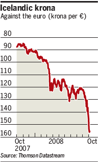

The global financial storm encircles remote, beautiful Iceland.
If one favors poetry over precision, Iceland could be described as a frozen island sitting atop a huge volcano. Its economy in recent years was similarly poised for a meltdown, and the inhabitants of that remote but beautiful land were too busy enjoying the transitory pleasures of soap-bubble "prosperity" to pay attention.
Now that their banking system has collapsed and their imports have been cut off, Icelanders are too busy emptying supermarket shelves to ponder the disastrous errors that led to their national disaster.
Embodiment of a hearty people: Iceland's Jon-Pall Sigmarsson (1961-1993) was a four-time World's Strongest Man. He died in the gym attempting to dead-lift the equivalent of a small continent. There are worse ways for a man to go.

Iceland was settled by Norwegian explorers in the ninth Christian Century, and for most of its history the country's economy was wedded to fishing, a cyclical market that taught the nation's inhabitants to value strength, perseverance, thrift, and relatively modest living.
Other migrations brought Danes, Irish, Scots and Swedes to Iceland. A vigorous and attractive people flourished in splendid isolation. And it's no surprise that Iceland, in recent years, distinguished itself by producing some of the strongest men and most beautiful women known to humanity.
Like too many other countries, however, Iceland fell prey to the peddlers of debt-based financial "products" whose terms were impenetrably abstruse and whose connections to actual productivity were distant and dubious. The tiny nation's banking system became deeply involved in repackaging international investment instruments, and with its minuscule population (roughly 300,000), Iceland vaulted to fifth place on the list of the world's wealthiest nations as measured by per-capita GDP.

Northern Colossus: The wonderfully named
Magnus ver Magnusson, another four-time
World's Strongest Man from Iceland,
seen here in a typical event.
Magnus ver Magnusson, another four-time
World's Strongest Man from Iceland,
seen here in a typical event.
The illusion of prosperity was dispelled a little more than a week ago, when Iceland's entire financial system imploded. For months ahead of that cataclysm, Icelanders, under the pressure of economic necessity, had begun to rediscover the virtue of frugality. But their economy had already passed the Event Horizon.
When skittish British depositors began pulling their funds from Icesave, an on-line affiliate of Iceland's Landskanki, Reykjavik responded by imposing what amounted to a limited bank holiday. This prompted the British government to employ a "counter-terrorism" law to freeze Icelandic deposits in British banks.
So we were treated to the fascinating spectacle of one NATO ally treating another as a terrorism-sponsoring "rogue nation." This picture became a touch surrealistic when Iceland's government, having nationalized the banking system and desperate to prevent a permanent system-wide collapse, turned to Moscow for a multi-billion-euro emerency loan.
Three years ago, Iceland was ranked second (after its Mother Country, Norway) on the UN's Human Development Index. Now, its currency is dead, its banking system is in hospice care, and its government -- in a role familiar to juntas ruling many indigent societies so charmingly referred to as "developing" nations -- is playing the mendicant at the International Monetary Fund, pleading for an international bailout. It is the first "developed" nation to request such help since pre-Thatcher Britain did so in 1976.


Irony is plentiful in the story of Iceland's descent from Nordic economic titan to bankrupt international panhandler. But Americans aren't entitled to so much as a second of smugness, given that we're following exactly the same trajectory.
American tables are not as dependent as Iceland's on imported food. But for the past several years, we have imported more food than we have produced. And now that short-term commercial credit has frozen, getting imported food to supermarkets and other retail outlets has suddenly become much more difficult. The effects of this development are yet to be felt, but they will be manifest in due time.
Icelanders are denuding supermarket shelves of basic household needs, from fresh produce to canned items to light bulbs. This is as close as that island's small, tranquil, and relatively homogenous population comes to an outright riot.
When Americans face the same circumstances -- and we will -- we can expect to see localized eruptions of Bedlamite violence that will make the 1992 L.A. Riots look like a series of mild high school pranks.
I'm cynical enough to think that our rulers, who eagerly seize power under the pretext of crises,
are counting on an upheaval of this kind in order to propel us into the "New Bretton Woods" global financial system now being openly discussed.
Evil designs: John Maynard Keynes (left) confers with Harry Dexter White at the 1944 Bretton Woods Conference.

Eventually this would be an updated and fully realized version of the Bretton Woods system as originally envisioned by the detestable John Maynard Keynes and his comrades, which would be built around a world central bank and a world fiat currency (Keynes suggested that it be called the "bancor"; Keynes' comrade Harry Dexter White wanted to call it the "unita").
This was seen as a bit too ambitious in 1944. In 2009, this proposal may be embraced by many as the only alternative to the complete collapse of the world economy. And the political class both here and abroad is doing its part by enacting policies that are certain to fail.
There is already a de facto global financial system in operation, as the United States and the governments of the various European Union states implement exactly the same policies on both sides of the Atlantic: Socialize the bad banking assets, and nationalize any good ones that remain. This amounts to a global race in which the finish line is economic oblivion. The U.S. may not be the nation that breaks the tape, but we'll ge there eventually.
The Triumvirs assemble: While the Bushling (off-camera) recites his scripted lines, Henry Paulson works on his Mussolini impression and Bernanke channels Lenin.

Yesterday, Commissar Paulson, head of the Directorate for Protection of Plutocratic Assets, summoned the CEOs of nine "healthy" banks to announce that the Regime is taking a controlling interest in each of them. Eventually, the Regime will take control of thousands of smaller banks and financial institutions.
As Megan McArdle of The Atlantic observes, the Regime is first recapitalizing the big, "healthier" institutions, rather than the sicklier ones, in order to defer, for as long as possible, public disclosure of the condition of the banking system: "In this case, the government is specifically fighting to keep the market from getting information about whose balance sheets are shakiest [and] ... recapitalizing only the weak ones would send a message about their balance sheets that might trigger the run he is trying to prevent."
This morning (October 14), the withered little simian in the White House, who has a little less than 100 days left to ruin whatever still works in this country, emerged from his lair, squinted the eyes from which the light of intelligence has never shone, rummaged around in the cranium in which wisdom has never dwelt, and then spoke another of the lies that come so easily to his sneering lips:
"The government's role will be limited and temporary. These measures are not intended to take over the free market but to preserve it."
Bush was flanked by the other two members of the Regime's de facto ruling Triumvirate, Commissar Paulson and Commissar for Currency Destruction Bernanke.
Paulson struck an authentically Stalinist note when he declared: "The needs of our economy require that our financial institutions not take this new capital to hoard it, but to deploy it." Down with "hoarders," those self-fixated wreckers who react to an economic downturn by intelligently choosing thrift over profligacy! Who ever heard of a bank saving money, rather than pissing it away in bad loans to government-favored recipients?
But here's the point: Now that the banks are receiving "capital" from the government, and under government control, they will operate on the basis of political priorities, rather than the needs of the market and the interests of their shareholders.
Bernanke, who really deserves to be beaten savagely with the nearest available object (especially if that object is either Paulson or Bush), announced, in effect, that the "temporary" measures described by Bush will be in place in perpetuity: "We will not stand down until we have achieved our goals of repairing and reforming our financial system and thereby restoring prosperity to our economy."
Given that the course being pursued will result in the destruction of our currency, what Bernanke was really saying is that the Triumvirate will not "stand down" until it has finished destroying our economy, or until the new global banking system is in operation, or both.
For as long as they can get away with it, everyone who benefits from this deception will play along. With the dutiful but palpably doomed earnestness generally displayed by adherents of a suicide cult they will assure themselves, and the rest of us, that we really can magically heal mortally crippled financial institutions through the laying-on of authoritarian hands.
Last Friday, reacting in shock as markets around the world were in free-fall, one London trader exclaimed, "It's like someone cancelled gravity."

Actually what we saw last week, and will see in the future, is the equivalent of gravity pitilessly asserting itself.
Massive liquidation of some kind simply has to occur. It should take the form of vast, painful settlement of bad debts and the shuttering of terminally stricken financial enterprises. Instead, we're going to see the annihilation of the fiat dollar and the liquidation of the American middle class.

Get it, read it, and get ready.
Dum spiro, pugno!
32 comments:
... as long as we're not slouching toward Eddlem.
That'd be disastrous!
turning and turning in the widening gyre:
The "recovery" lasted one day before the market resumed it's downward course. At least the burning cities will provide some warmth this long cold winter.
I like your quote about Bernanke needing a good beating - classic. I look at pictures of him from the side and he looks like a really dumb guy. Like Bush without the attitude. I think famed investor Jim Rogers said it best about him: "what does he know about the economy, I mean the guy spent his entire life studying the printing of money - that alone and nothing else- he's clueless"
Au contrare Tom. Had Americans been slouching toward Eddlem by reading your old TNA articles, along with Will's, America wouldn't be in this financial mess.
-RW
If Russia bails out Iceland will that mean a Russian aircraft carrier in the Atlantic? Ahh the fun of unintended consequences. The average dullard hates intelligence and that is why Obama has no chance and Diebold (Premier) will make sure we get Bomber McCain and Empress Moosealina. HL Mencken was right in his quote about one day an absolute moron would be president. So let's rewind our Forrest Gump vhs tapes and enjoy the show being a third world laughing stock will be invigorating.
"These measures are not intended to take over the free market but to preserve it." -- George W. Mugabe
Dubya may have been unintentionally parroting one of justifications offered (in all seriousness) for US atrocities in Vietnam: "We had to destroy the village in order to save it."
What should be disturbing about Iceland is that it was already recognized in mid-2007 to be overheated, overindebted, and overstuffed with hot money, as its currency began to wobble. The last year and a half has been a slow-motion slide over the cliff for Iceland, like a dream sequence in which a freight train is bearing down upon the dreamer, who can't move his feet to get off the track.
Iceland, like the US, had been taking increasingly desperate measures to defend its banks and currency. But its crushing debt load was an immovable object which refused to yield to "policy measures."
Meanwhile, US authorities are attempting to defend the pyramid-scheme status quo in the same manner which has been employed since Oil Shock I in 1973: paper over defaulting debt with a fresh, larger slug of debt. But virtually no economist other than Michael Hudson has recognized that when aggregate debt payments exceed the surplus generated by an economy, default becomes inevitable. Since governments don't want to provoke popular revolt by halting payments outright, they are choosing the "soft default" option of inflating away the real value of the debt.
Let me spell this out: if the dollar loses half its purchasing power, then the real burden of Usgov's $60 trillion negative net worth is cut in half. Yay! Then we would only be in the hole by $30 trillion in 2008 dollars. If this doesn't make you feel a whole lot better -- join the club.
What is sad and tragic, in a supposedly advanced, highly-educated nation, is that besides a handful of commentators -- Will Grigg, Chris Martenson, the great G. Edward Griffin (author of the inside story of the Fed's formation, "The Creature From Jeckyl Island") -- NO ONE GETS IT. You can read in history books about the South Sea Bubble and John Law's paper money scheme. But no one sees any analogy to what's happening today, though the analogy is on point to the last detail.
Maybe what confuses people is that earlier Bubbles -- the Tulip Bubble, the Mississippi Bubble -- burnt themselves out in a couple of years. Then speculation was outlawed, and punters returned to productive occupations.
But in the present case, with global sponsorship, a fiat-currency Bubble has been propagated for an incredible 35 years. What's astonishing is not that it's popping, but rather that it survived for so long.
I return to the point that confounds me: how can educated people be so blind, as not to see that (1) our fiat-currency economy is a debt-based pyramid scheme; and (2) attempts to reinflate the Bubble can "work" only a short while, if they work at all.
Survival principle #1: there's a problem with the dollar, just as there was a problem with the Icelandic krona, and with the Argentine peso in 2001. It is simply idle to think that the US can flood the debt market with trillions in fresh Treasury securities, without damaging the dollar's external value and forcing up rates.
Unlike ANY other commentator, Will Grigg has nailed both the economic and political implications in one chilling sentence: "We're going to see the annihilation of the fiat dollar and the liquidation of the American middle class."
Strip Krugman of his Nobel Prize in Economics and award it to Will Grigg, who actually deserves it. Then consider how -- even knowing what's coming, as Iceland did -- we can do anything about it, rather than flailing about on the tracks as the freight train bears down. Is this all just a bad dream?
Wonderfully clear, hard-hitting prose. This is a relief after the vain, stupid, cliche-ridden, self-serving posturing of our elected officials. especially the criminal-in-chief. Thanks for it--I think.
If a person were a cynic, they might
consider the events leading up to
this collapse as deliberate and
premeditated.
Another great article, Mr.Grigg.
I thoroughly enjoy your writing.
You demonstrated your point with pics of the world's strongest men, you should have been gracious enough to show us the beautiful women. I mean, after you throughly drive home the point that its not as bad as we think it is, it's actually worse, the least you could do is show us pretty pictures.
I agree with Scott!
More pretty girls! ha ha!
On a more serious note. Love your blog, after listening to you on the radio and reading your writings, I cant understand why you are not recognized as one of the great social commentators of our generation.
As we move towards fascism and open marshall law, intelligent commentators such as yourself give me, well, hope.
thanks will!
You demonstrated your point with pics of the world's strongest men, you should have been gracious enough to show us the beautiful women. I mean, after you throughly drive home the point that its not as bad as we think it is, it's actually worse, the least you could do is show us pretty pictures.
I agree with Scott! More pretty girls! ha ha!
Hey, guys, I'm a married man, remember? I shouldn't be foraging on the web for pictures of other women. :-)
Besides, Korrin has sort of spoiled me in that respect. The finest compliment I can confer on Iceland's female population is to say that more than a few of them look like my wonderful Korrin.
"The finest compliment I can confer on Iceland's female population is to say that more than a few of them look like my wonderful Korrin"
Wow, your writing has shown your intelligence, Mr. Grigg, but you have just shown yourself to be a very, very smart husband!
:-)
Your wife is very fortunate!
Is she doing better these days?
Oh come on Will - you could always show us Sarah Palin (sans audio please . . ., nice to look at but dumb as a fence post and that may be slighting fence posts) After all that's what she's on the ticket for isn't it - a little eye candy to distract from the disaster.
Enough dripping sarcasm for one night . . .
Sic Semper Tyrannis
"But virtually no economist other than Michael Hudson has recognized that when aggregate debt payments exceed the surplus generated by an economy, default becomes inevitable."...from anon 3:57am
It seems to me that it shouldn't take an "economist" to see something so obvious.
Of course this was all premeditated!
Thanks, patriotic_mama. I really appreciate your kindness in asking after Korrin. Elsewhere on the web I've specifically disclosed the nature of her illness, so I'll try to answer your question candidly here.
It's really difficult to describe how Korrin is doing from day to day. She suffers from a form of schizophrenia, and from what I've learned it's likely that she'll never be free of at least some of the symptoms.
Right now, she's on a non-invasive treatment regimen that controls her psychosis and leaves her able to function. That wasn't always the case.
About two years ago, after her second hospitalization (and shortly after I was fired from TNA), Korrin was put on a set of medications that left her with severe dyskinesia. She could barely walk, speak, or even get out of bed. I quite literally had to help her do everything.
And to make matters even worse, the psychosis persisted and she ended up in the hospital anyway.
It seemed to me that her "treatment" may have been worse than the affliction. But something had to be done, because when her psychosis was allowed to rage unchecked she eventually became suicidal.
She would gather the children around her every night and solemnly inform them that she was going to die that night, and that they would soon have a new mother. To say no more, this wasn't healthy for either Korrin or our kids.
This went on intermittently through 2007. And it led to three more stints in the hospital, the last of which went on for nearly seven months. She came home, hopefully for good, in March.
And still she constantly hears The Voice; it won't let her sleep, it torments her during the daytime, it undermines her emotional stability, whipsawing her from one extreme mood to its opposite without warning.... And this is how she is when she's actually receiving treatment.
I have to sit and watch her suffer. Forgive me for being so vulgar, but this sucks harder than anything I can imagine. I'm not being flippant; I'm in tears as I write this.
I wish this enemy were something I could rebuke, rebut, or merely beat into submission; something I could physically uproot, or pound into atoms with a sledgehammer. But it's nothing of the sort.
I can only sit here and watch her suffer as this thing ravages her, stealing from her the irreplaceable memories of the early lives of our oldest children and depriving her of the joy she should have right now, while our kids are still young and filled with unsullied eagerness and unlimited promise.
The only thing Korrin has ever wanted to be is a wife and mother.
She was Homecoming Queen her senior year. Each member of the court had been asked what she wanted to do for a living. Three of them described careers - in law, or medicine, or science. Korrin's answer was: "I want to be a wife and mother." The crowd's reaction would have drowned out Krakatoa.
And now, for reasons I can't understand or explain, Korrin can't be a full-time wife and mother. This makes me sadder than I imagined possible, and angrier than I have ever been.
Please forgive me for going on at such length. I really do appreciate your concern; it means more to me than I can adequately describe. God bless.
Never met you Will, but love the blog. Reading about your wife breaks my heart. Our family has struggled with my sister having severe schizophrenia, being bipolar, manic depressive, and episodically delusional. Even though she left us for a new life elsewhere and is no longer a daily part of our lives, she left a child that has many problems that will prevent him from ever being self supporting. Raising him has been an ordeal for my parents and our extended (but close) family. Although it is not my spouse that suffers, I can relate to the feelings of helplessness and anger. As a father of three young children, I will be saying some special prayers for your family.
Life has thrown a pretty nasty curve ball your way my friend. Strength and peace to you . . .
Sic Semper Tyrannis
Thank you for sharing with us (your loyal readers) an update on your wife's condition. I remember when you first mentioned that she had fell ill, but I did not know it was a mental illness. My family, too, has been afflicted, my wife's aunt is schizo-affective and my cousin had to be hospitalized twice for depression and attempted suicide (with a helping heaping of anger issues). I have seen the devastating affects mental illness can have on a family, but for it to strike at the very heart of your family, your wife and your children's mother, well, its hard to even think about.
I've long admired your writing, but now I'll also admire the resevoirs of personal strength that you are undoubtedly drawing upon as your family grows and deals with this.
My thoughts and best wishes are with you, your wife, and the young ones.
May God Bless You Will. As a long time loyal reader of your blog and (formerly) articles in the TNA. I can say that you a true kindred spirit. Although in this life we may never meet, it will be a great pleasure to meet in person in the next.
My wife and I will remember to pray for the needs of of you and your family during our devotions.
I hope that you have a solid group of christian friends, in your area, that are able to give you a hand.
In Christ,
Stuart
Will, may the Spirit of the Lord be
with you and your family to keep you
and strengthen you.
All any of us truly have is our faith
and love for one another. I pray that
it may sustain us and protect us
until the great and glorious day
of our Lord arrive.
You are in my thoughts and prayers.
will I'm going to pray for you right now.
From what little I know of you, you have shown yourself again and again to be a man of incredible virtue and uncompromising principle. I consistently am amazed, as I find out little tidbits about your past, about how again and again you stand on truth, no matter what the cost.
I know it sounds cliche and trite to say so, but I know the Lord understands what all you and your wife are going through, and knows every step you take and hair on your head. He wont allow you to fall, and he consistently guides your paths.
If that makes what you are going through any easier than mission accomplished. There are many out here that know you through your writings that Im sure will be praying for you daily.
Will, as far as Iceland goes at least they still have the world's most beautiful women. That's a major plus in my book. At first I thought that the balance scale used as one of three symbols by the Department of Treasury was an anachronism that had something to do with enforcing a system of honest weights and measures - an obvious impossibility when using fiat currency rather that gold and silver. Can you believe that it actually stands for justice? The hypocrisy is enough to make one ill.
God bless you, Will. Be strong, and admit to Him that you are weak.
I am praying for you and your family.
-Sans Authoritas
Dear Will,
http://www.onesolitarylifemovie.com/
God bless you and give you courage. One day, the battle will end and your reward - yours and Korrin's - will be more wonderful than may be imagined. Keep faith.
Kind regards,
Lemuel Gulliver.
Will, the high point of my day is checking to see if you have posted another article. I pray that you continue to hammer out, with your demonstrated eloquence, the type of reporting and commentary not found anywhere else. It is for my selfish benefit that I ask.
Please keep up the battle. It must be terribly difficult both to manage the family and to clear your head for writing. I would find it impossible.
You have many who are praying for you, your wife, and your family. My the Lord shine His Face upon you and your family.
Nice Post. Thanks for sharing this information with us.
I was so overwhelmed by your description of your family's struggle that I had to take a break to collect my thoughts.
I am in awe of your devotion to Korrin and your determination to love her through this.
I too have dealt with a family member who suffers from mental illness, and have agonized over the reasons that God would allow such a condition to exist.
I do not know the answer, but I have come to accept that it is a challenge that not only is for the ill individual, but a proving ground for those who love and serve that person.
You are in my prayers. Perhaps if we all pray for each other, we can withstand these challenges.
I hope that you have family and friends that are helping you through this as well.
Take care of yourself for your children's sake!
May God bless and keep you.
When you walk through the storm
Hold your head up high
And don't be afraid of the dark
At the end of the storm
There's a golden sky
And the sweet silver song of the lark
Walk on, through the wind
Walk on, through the rain
Though your dreams be tossed and blown
Walk on, walk on, with hope in your heart
And you'll never walk alone
You'll never walk alone
Walk on, walk on, with hope in your heart
And you'll never walk alone
You'll never walk alone
God bless and keep you and Korrin.
"'The needs of our economy require that our financial institutions not take this new capital to hoard it, but to deploy it.'"
If this is not the attitude of a Central Planner, then I don't know what one would be. Loan, you stupid banks! Don't make us put a gun to your head!
My question for the group is as follows:
If the banks don't shoebox the money, wouldn't they simply be offering even more junk credit? What crank would willingly accept junk credit as payment at this point?
The leaders of a central government cannot simply dictate their way out of problems. However, the leaders and at least some of the people are convinced that it is possible. (I am envisioning Dear Leader shaking his fist and threatening the laws of economics.)
"Capitalism is the astounding belief that the most wickedest of men will do the most wickedest of things for the good of everyone." John Maynard Keynes
I echo most of the above sentiments, Will.
Even though it takes a LOT to amaze (as well as inspire) me these days, your strength and earnest desire to keep on keeping on when the obstacles seem so thick and seem to be ever more insurmountable, does amaze me. It gives me some comfort to realize that there REALLY are genuine self-sacrificing people like yourself that exist. Through it all, you continue to slog forward.
Your story especially these last few years IS an inspiration to anyone who faces similar hardships. It's people like you, Will, who will inspire others to keep on keeping on in the face of majorly adversarial odds. I'd only add one picoscopic caveat: Don't forget to daily thank the One who enables you to "keep on keeping on" mentally, spiritually, and physically.
A hat tip and salute to you...
I don't have immediate issues such as you face (other than type1 diabetes...which is problematic for me to say the least :)), never mind five small children to round out the mix, but my first cousin is bipolar and he has to take lithium to prevent wild mood swings, incoherent actions, and suicidal tendencies. His father (my uncle) is also bipolar and for years, from the early 70s when I think he was initially diagnosed through the early 80s, ignored his medication and he and family suffered greatly. Unfortunately, he disowned his father.
Remember Will, when you think YOU are the only one in the WORLD who seems to be under familial hardship, there are MANY others who are going through their own - some more trying, others less so than our own...in our own eyes. But, as we are all different in our degree of "sponginess," ergo, is everyone's trial(s) "tailor made," so-to-speak.
However, regardless of the trial(s) in question, if we seek His guidance, none of us have to fold up and be defeated by them.
From your account, you certainly seem to be a near perfect illustration of that maxim.
This all somewhat reminds me of a funeral where some family members, instead of being sad, in despair, and hopeless after one of their dearly beloved member's passing, perhaps aware of his/her relationship to Christ, are hopeful and express a countenance of joy instead. Naturally, of course, to the world in general that's incomprehensible.
Anyway, thanks for sharing such personal insights with us, Will; I'll continue to hold you and your family in my prayers.
Post a Comment